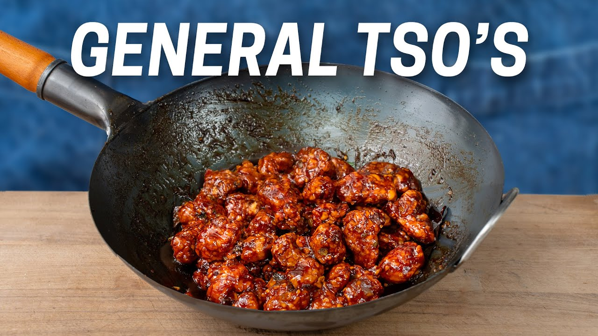

Brian Lagerstrom's extra-crispy General Tso's: batter-dipped chicken tumbled through a craggy dredge, fried, then glazed sticky. The 20-minute fridge rest after breading is the whole trick — skip it and the crust falls off.
Poke each breast 20–30 times per side with a fork, slice into long strips, then cut into ¾" cubes. Stir the marinade together, coat the chicken, and rest 20 minutes.
Whisk the dry-mix ingredients in a large bowl. Scoop 2 cups of the mix into a second bowl and stir in the water — thin pancake batter. Pour about a cup of that batter back into the dry bowl and rub with your fingers into rice-to-lentil-sized pebbles. Those crumbs are the crunch.
Working in thirds: chicken through the wet batter, drip, then into the craggy mix. Shower bits over each piece, squeeze gently, shake off. Spread on a tray and refrigerate 20 minutes — the rest hydrates the crust so it welds on.
Whisk all sauce ingredients smooth. Set by the stove.
Heat the oil to 325°F. Fry in two batches: don't touch for the first minute, then nudge. 6–7 minutes to deep gold. Drain on a rack.
Get a wok ripping hot with a squeeze of oil. Scallion whites 60 seconds, chiles briefly, then ginger and garlic, stirring constantly, 30–40 seconds — fragrant, not browned.
Sauce in around the edge, boil, and reduce until it leaves a trail. Chicken in, toss 30 seconds — shiny, sticky, still crisp in spots. Over rice, scallion greens on top.